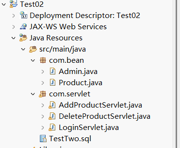
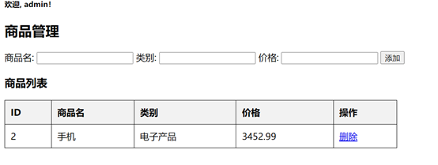

PowerShell mysqld --console
数据库表结构 创建 productdb 数据库，并在数据库中创建 admin 与 products 表， SQL 语句如下 ``` CREATE DATABASE productdb DEFAULT CHARACTER SET utf8mb4 COLLATE utf8mb4_unicode_ci;
USE productdb;
CREATE TABLE admin ( id INT AUTO_INCREMENT PRIMARY KEY, username VARCHAR(50) NOT NULL, password VARCHAR(50) NOT NULL );
CREATE TABLE products ( id INT AUTO_INCREMENT PRIMARY KEY, name VARCHAR(255) NOT NULL, category VARCHAR(255) NOT NULL, price DECIMAL(10,2) NOT NULL );
INSERT INTO admin (username, password) VALUES (‘admin’, ‘123456’); ```
创建项目，项目名为 Test + 学号，学号为两位短学号，如： Test02
在项目中创建一个 com.bean 的包，包下创建 Admin （管理员）、
Product （商品）两个类
在项目中创建一个 com.servlet 的包，包下创建 LoginServlet 、
AddProductServlet 、 DeleteProductServlet 三个类

Admin 类有三个私有属性 id 、
username 、 password ，
Product 有 id 、 name 、
category 、 price
属性，创建构造初始化方法与 set 、 get 方法
package com.bean; public class Admin { private int id; private String username; private String password; public Admin() {} public Admin(int id, String username, String password) { this.id = id; this.username = username; this.password = password; } public int getId() { return id; } public void setId(int id) { this.id = id; } public String getUsername() { return username; } public void setUsername(String username) { this.username = username; } public String getPassword() { return password; } public void setPassword(String password) { this.password = password; } }
package com.bean; public class Product { private int id; private String name; private String category; private double price; public Product() {} public Product(int id, String name, String category, double price) { this.id = id; this.name = name; this.category = category; this.price = price; } public int getId() { return id; } public void setId(int id) { this.id = id; } public String getName() { return name; } public void setName(String name) { this.name = name; } public String getCategory() { return category; } public void setCategory(String category) { this.category = category; } public double getPrice() { return price; } public void setPrice(double price) { this.price = price; } @Override public String toString() { return "Product{id=" + id + ", name='" + name + "', category='" + category + "', price=" + price + "}"; } }
后端代码
后端登录业务代码
package com.servlet; import java.io.IOException; import java.sql.Connection; import java.sql.DriverManager; import java.sql.PreparedStatement; import java.sql.ResultSet; import javax.servlet.ServletException; import javax.servlet.annotation.WebServlet; import javax.servlet.http.HttpServlet; import javax.servlet.http.HttpServletRequest; import javax.servlet.http.HttpServletResponse; import javax.servlet.http.HttpSession; import com.bean.Admin; @WebServlet("/LoginServlet") public class LoginServlet extends HttpServlet { protected void doPost(HttpServletRequest request, HttpServletResponse response) throws ServletException, IOException { request.setCharacterEncoding("UTF-8"); response.setCharacterEncoding("UTF-8"); String username = request.getParameter("username"); String password = request.getParameter("password"); try { Class.forName("com.mysql.cj.jdbc.Driver"); Connection conn = DriverManager.getConnection("jdbc:mysql://localhost:3306/bookdb?useUnicode=true&characterEncoding=UTF-8", "root", "123456"); PreparedStatement ps = conn.prepareStatement("SELECT * FROM admin WHERE username=? AND password=?"); ps.setString(1, username); ps.setString(2, password); ResultSet rs = ps.executeQuery(); if (rs.next()) { Admin admin = new Admin(rs.getInt("id"), rs.getString("username"), rs.getString("password")); HttpSession session = request.getSession(); session.setAttribute("admin", username); response.sendRedirect("productList.jsp"); } else { response.getWriter().println("<script>alert('无效的用户名与密码'); window.location='login.jsp';</script>"); } } catch (Exception e) { e.printStackTrace(); } } }
商品添加的业务处理
package com.servlet; import java.io.IOException; import java.sql.*; import javax.servlet.ServletException; import javax.servlet.annotation.WebServlet; import javax.servlet.http.HttpServlet; import javax.servlet.http.HttpServletRequest; import javax.servlet.http.HttpServletResponse; import com.bean.Product; @WebServlet("/AddProductServlet") public class AddProductServlet extends HttpServlet { protected void doPost(HttpServletRequest request, HttpServletResponse response) throws ServletException, IOException { request.setCharacterEncoding("UTF-8"); response.setCharacterEncoding("UTF-8"); String name = request.getParameter("name"); String category = request.getParameter("category"); double price = Double.parseDouble(request.getParameter("price")); Product product = new Product(0, name, category, price); try { Class.forName("com.mysql.cj.jdbc.Driver"); Connection conn = DriverManager.getConnection( "jdbc:mysql://localhost:3306/productdb?useUnicode=true&characterEncoding=UTF-8", "root", "123456"); String sql = "INSERT INTO products (name, category, price) VALUES (?, ?, ?)"; PreparedStatement ps = conn.prepareStatement(sql); ps.setString(1, product.getName()); ps.setString(2, product.getCategory()); ps.setDouble(3, product.getPrice()); ps.executeUpdate(); conn.close(); } catch (Exception e) { e.printStackTrace(); } response.sendRedirect("productList.jsp"); } }
删除的后端实现代码
package com.servlet; import java.io.IOException; import java.sql.*; import javax.servlet.ServletException; import javax.servlet.annotation.WebServlet; import javax.servlet.http.HttpServlet; import javax.servlet.http.HttpServletRequest; import javax.servlet.http.HttpServletResponse; import com.bean.Product; @WebServlet("/DeleteProductServlet") public class DeleteProductServlet extends HttpServlet { protected void doGet(HttpServletRequest request, HttpServletResponse response) throws ServletException, IOException { request.setCharacterEncoding("UTF-8"); response.setCharacterEncoding("UTF-8"); int id = Integer.parseInt(request.getParameter("id")); Product product = new Product(id, null, null, 0); try { Class.forName("com.mysql.cj.jdbc.Driver"); Connection conn = DriverManager.getConnection( "jdbc:mysql://localhost:3306/productdb?useUnicode=true&characterEncoding=UTF-8", "root", "123456"); String sql = "DELETE FROM products WHERE id=?"; PreparedStatement ps = conn.prepareStatement(sql); ps.setInt(1, product.getId()); ps.executeUpdate(); conn.close(); } catch (Exception e) { e.printStackTrace(); } response.sendRedirect("productList.jsp"); } }
将数据库连接驱动复制粘贴到项目中

将 mysql-connector-java.jar 加入 WEB-INF/bli ，然后右击 Build Path
，选择 Add to Build Path 即可
在 webapp 下（软件版本不同，有的在 WebContent
），创建登录界面，命名为 login.jsp
，如下图所示，实现管理员的登录功能
在 webapp 下（软件版本不同，有的在 WebContent
），创建商品管理页面，命名为 product.List.jsp
，如下图所示，实现管理员的管理功能

登录页面代码
<%@ page contentType="text/html;charset=UTF-8" language="java" %> <!DOCTYPE html> <html> <head> <title>Admin Login</title> </head> <body> <h3 style="margin-left:50px">商品管理员登录</h2> <form action="LoginServlet" method="post"> <label>账号:</label> <input type="text" name="username" required><br> <label>密码:</label> <input type="password" name="password" required><br> <input type="submit" style="margin-left:70px;margin-top:20px" value="登录"> </form> </body> </html>
商品管理页面
<%@ page language="java" contentType="text/html; charset=UTF-8" pageEncoding="UTF-8"%> <%@ page import="java.sql.*, java.util.*, com.bean.Product" %> <% String username = (String) session.getAttribute("admin"); if (username == null) { response.sendRedirect("login.jsp"); return; } %> <html> <head> <title>商品管理</title> </head> <style> form { margin-bottom: 20px; } table { width: 50%; border-collapse: collapse; } th, td { border: 1px solid black; padding: 10px; text-align: left; } th { background-color: #f2f2f2; } </style> <body> <h5>欢迎, <%= username %>！</h2> <h2>商品管理</h2> <form action="AddProductServlet" method="post"> 商品名: <input type="text" name="name" required> 类别: <input type="text" name="category" required> 价格: <input type="text" name="price" required> <input type="submit" value="添加"> </form> <h3>商品列表</h3> <table border="1"> <tr> <th>ID</th><th>商品名</th><th>类别</th><th>价格</th><th>操作</th> </tr> <% List<Product> productList = new ArrayList<>(); try { Class.forName("com.mysql.cj.jdbc.Driver"); Connection conn = DriverManager.getConnection( "jdbc:mysql://localhost:3306/productdb?useUnicode=true&characterEncoding=UTF-8", "root", "123456"); Statement stmt = conn.createStatement(); ResultSet rs = stmt.executeQuery("SELECT * FROM products"); while(rs.next()) { Product product = new Product( rs.getInt("id"), rs.getString("name"), rs.getString("category"), rs.getDouble("price")); productList.add(product); } conn.close(); } catch (Exception e) { e.printStackTrace(); } for(Product p : productList) { %> <tr> <td><%= p.getId() %></td> <td><%= p.getName() %></td> <td><%= p.getCategory() %></td> <td><%= p.getPrice() %></td> <td><a href="DeleteProductServlet?id=<%= p.getId() %>">删除</a></td> </tr> <% } %> </table> </body> </html>
登录成功后跳转到商品管理页面，在界面表单中添加信息，点击按钮后，页面的列表中会显示添加的商品信息，同时通过
Session 功能显示欢迎登录用户名信息

点击表格中的删除按钮，弹出确定删除的弹框，点击确定即将该商品信息删除，删除成功后，页面重新刷新，显示新的商品列表信息

删除成功后的界面

启动项目
- 在 MySQL 中执行 SQL 语句，创建数据库和表
- 在 Eclipse 中导入项目，确保 Tomcat 服务器已添加
- 将 mysql-connector-java.jar 添加到 lib 目录
- 启动 Tomcat 服务器，访问 http://localhost:8080/Test02/login.jsp 进行登录
- 登录后可进行书籍的添加、修改和删除。注意 Tomcat 的端口号是否是 8080 ，根据环境自行修改